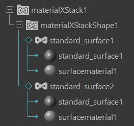
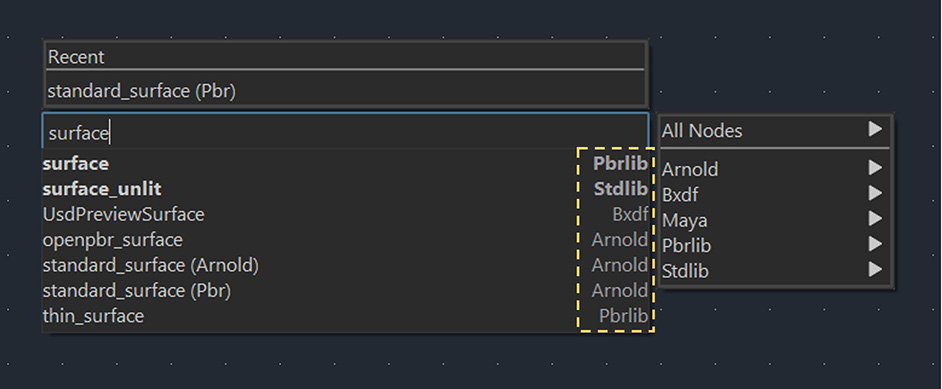

LookdevX 的最新更新引入了对 MaterialX 数据格式的支持。美工人员现在可以直接将 MaterialX 材质指定给 Maya 几何体。

LookdevX for Maya 1.3.0 新特性
- 支持 USD 和 MaterialX 着色图表
现在，您可以在同一个 Maya 会话中同时使用原生 USD 和 MaterialX 着色图表。您可以从 LookdevX 曲线图编辑器的开始屏幕或创建新图表选项卡时选择要使用哪个数据模型。
- MaterialX 数据结构
创建 MaterialX 材质时，Maya 会自动创建相应的数据结构（MaterialX 堆栈和 MaterialX 文档），您可以在大纲视图中查看这些结构。MaterialX 堆栈是 MaterialX 文档的容器，而 MaterialX 文档则是存储材质的地方。

- 将 MaterialX 材质直接指定给 Maya 几何体
现在，您可以单击鼠标右键，在大纲视图和 LookdevX 曲线图编辑器中将 MaterialX 材质指定给 Maya 几何体。
- 在“选项卡”(Tab)菜单中使用库名称标识节点
在“曲线图编辑器”(Graph Editor)的“选项卡”(Tab)菜单中，每个节点现在显示其源库的名称。您可以根据节点的特定库轻松识别和选择节点。

- 工具栏
此更新引入了一个新工具栏，可以轻松访问常用操作，包括“显示/清除选定材质”(Show/Clear selected materials)、“收拢/展开所有节点”(Collapse/Expand all nodes)和“清除单放”(Clear Solo)。
- 可用性更新：升级/降级属性
现在，只需单击鼠标右键，即可将属性升级或降级到输入或输出节点。
有关新功能、改进和错误修复的完整列表，请参见 LookdevX for Maya v1.3.0 发行说明。
若要了解 LookdevX for Maya，请观看 Maya 教学频道上的教程。
若要熟悉工作流，请参见 LookdevX 快速入门。
若要参与 LookdevX 开发，请访问官方 Autodesk Beta 社区。
有关详细信息，请访问 LookdevX for Maya 联机帮助。